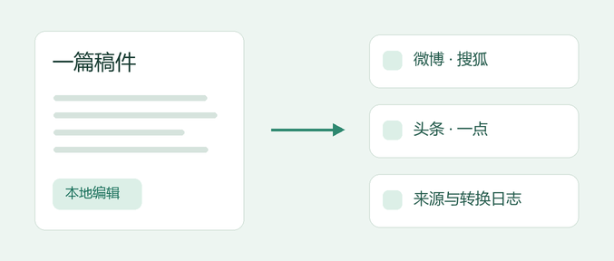

这是一篇由项目自行编写的合成稿件，用于体验导入、编辑与分发，不包含真实客户文章或业务数据。

保留原稿后，可以调整段落、章节、重点文字和图注。需要强调的内容仍保持原意，转换前后可以双侧对照。
准备包保留来源，格式变化有据可查。
不同平台支持的字号、颜色和图片位置可能不同。图片整合或样式替换应在转换记录中逐项说明，之后由用户检查并手动保存。
更多内容可使用自己的稿件替换。这里的示例链接仅用于检查链接保留。